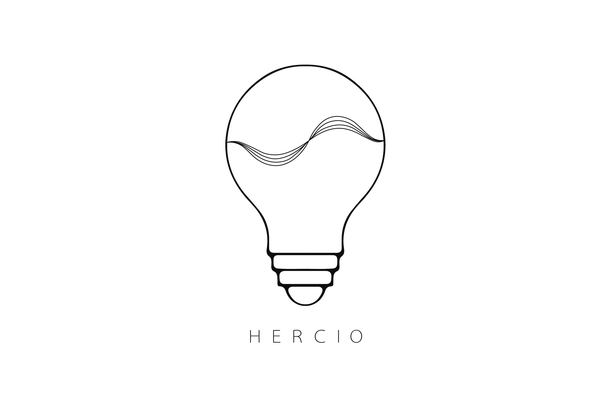
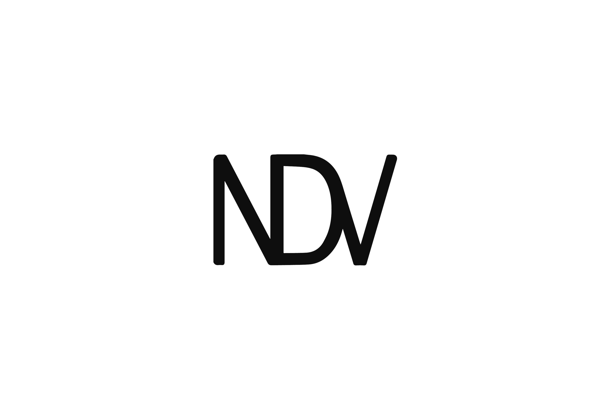
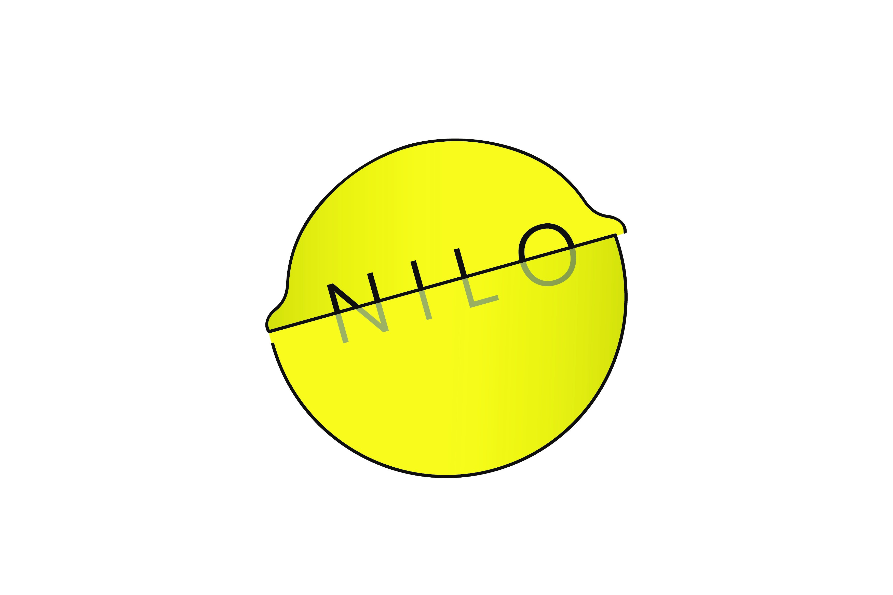
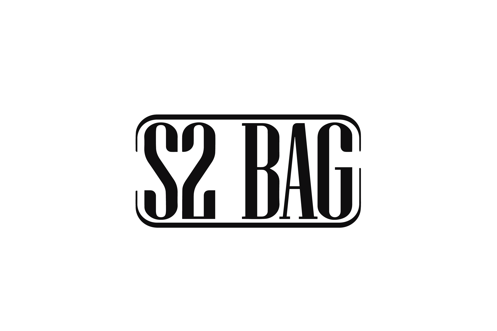

<!DOCTYPE html>
<html lang="en">
<head>
	<meta charset="UTF-8">
	<title>Portfolio</title>
	<meta name="viewport" content="width=device-width, user-scalable=no, initial-scale=1.0, maximum-scale=1.0, minimum-scale=1.0">
    <style> @import url('https://fonts.googleapis.com/css2?family=Oswald:wght@200&display=swap'); </style>
	<link rel="stylesheet" href="../css/estilos_layout_portfolio_proyectos.css">
</head>
<body>
    <header>
        <nav>
            <ul>
				<li><a1 href="#">Lara de Miguel</a1></li>
                <li><a href="contacto_portfolio.html">CONTACTO</a></li>
				<li><a href="proyectos_portfolio.html">PROYECTOS</a></li>
				<li><a href="sobre_mi_portfolio.html">SOBRE MI</a></li>
				<li><a href="inicio_portfolio.html">INICIO</a></li>
            </ul>
        </nav>
    </header>
    <section class="main">
        <article>
            <div class="imagen">
				
            <div class="imagen">
                
            <div class="imagen">
                </div>
            <div class="imagen"> 
                </div>
                
            <div class="imagen">
                </div>
        </article>  
    </section>
    <aside1>
		<div class="widget">
				<h1 class="titulo" >HERCIO</h1>
                <p class="justificado">Esta luminaria resuelve el problema de exceso de ruido en el ámbito que se sitúe, desde un hogar hasta una sala de reuniones. Según la tipología de sala y la concentración del sonido se podría seleccionar la luminaria ideal para el espacio. </p> <br>
                <p class="justificado"> Podría encontrarse recto, perfecto para habitaciones alargadas con el sonido repartido en diferentes zonas. Sería la que cubriría mayor superficie. También podría estar curvado, para espacios alargados en habitaciones de menor tamaño. La última forma sería convexo, para sonido muy concentrado en un mismo lugar, por ejemplo sobre una mesa. </p> <br>
                <p class="justificado"> Este proyecto nació de forma colaborativa. </p>
        </div>      
    </aside1>
    <aside2>
		<div class="widget">
				<h1 class="titulo">NDV</h1>
				<p class="justificado">“NDV” es un producto, realizado para una empresa con el mismo nombre, que buscaba actualizar los controles de accesos que tenían, aportándoles un aspecto más actualizado. Para ello, era necesario que contara con diversos aspectos como el NFC, el teclado, una cámara de forma opcional, pantallas... </p> <br>
                <p class="justificado"> Se trata de un elemento modular con varios pisos, incorporando unos leds en los saltos de altura. Estos indicarían si el usuario puede acceder o no al establecimiento. </p> <br>
                <p class="justificado"> Además, a pesar de tener un lector NFC, cuenta con una pieza extraíble en la parte posterior para poder leer la tarjeta de forma manual. </p>
        </div>      
    </aside2>
    <aside3>
		<div class="widget">
				<h1 class="titulo">Nilo</h1>
				<p class="justificado">Es una botella de limonada natural que busca alejarse del packaging de plástico clásico. Esta idea surgió a través de un concurso de Verallia, el tercer productor a nivel mundial de envases de vidrio. El objetivo era impulsar el cristal como material principal en el envase del producto. Este proyecto nació de forma colaborativa. </p> <br>
                <p class="justificado"> Su forma, acabando en esfera, recuerda a la propia fruta a la que se refiere. Además consta de dos partes diferentes, situándose una dentro de la otra.</p> <br>
                <p class="justificado"> De este modo, el globo que simula el limón se encuentra dentro de la parte transparente, la cual no sólo recuerda a un gajo de un cítrico, sino que da la sensación de exprimidor. </p>
        </div>      
    </aside3>
    <aside4>
		<div class="widget">
				<h1 class="titulo">S2 BAG</h1>
				<p class="justificado">“S2 BAG” es un estuche para un monociclo, concretamente uno de los más famosos en el mercado, el Segway Ninebot One S2. Al estudiar este producto se observó que, pese a tener accesorios, mientras no se usaba no había un método de transporte más allá de la propia anilla. Por ello, nació esta funda protectora flexible y adaptable, que recoge el producto mientras se usa y mientras se transporta. </p> <br>
                <p class="justificado"> Mediante los botones y unos ojales en las telas, se adapta para que la rueda quede fuera y lo proteja mientras se usa. Tras el uso, se despliega y queda abierto, rodeándolo por completo. Es así como, en esos pliegues, se recogen las asas que permiten llevarlo a la espalda.</p> <br>
                <p class="justificado">Todos sus acolchados interiores evitan que el monociclo se dañe, al igual que generan comodidad a la hora de cargarlo </p>
        </div>      
    </aside4>
    <aside5>
		<div class="widget">
				<h1 class="titulo">Pendientes de resina</h1>
				<p class="justificado">Este proyecto se basó en la realización de moldes para crear elementos de resina, concretamente joyería inspirada en la mitología griega. Para ello, se crearon los moldes de silicona a partir de diseños 3D. Se realizaron cuatro pares de pendientes (cabeza de los tridentes de Hades y Poseidón), pendientes de los rayos de Zeus y un anillo con hojas de laurel. Además, se creó una materioteca desde productos naturales. </p> <br>
                <p class="justificado"> Empezando por la esquina de arriba izquierda y continuando en fila: “Cola Cao”, Comino, Canela, Pimentón, Tequila de Fresa, Pulpa de Naranja, Piel de Naranja, Piel de Limón, Té de Mango y Frutas, Mostaza Nera, Café, Pimienta molida, Cenizas, Perejil, Eneldo, Cáscara de huevo, “Azulete”, Tabasco, Ginebra de Endrino, Angostura, “Ruavieja”, Sal en Escamas, Azúcar Moreno, Sal Rosa, Cúrcuma, Mezcla de Chillies, Té de Granada, Cebolla Morada, Cebolla, Mostaza, Harina, Pasta de dientes y Pétalos. </p>
        </div>      
    </aside5>
    <footer>
			<p>Lara de Miguel - 2022 - Creative Commons</p>
    </footer>
</body>
</html>